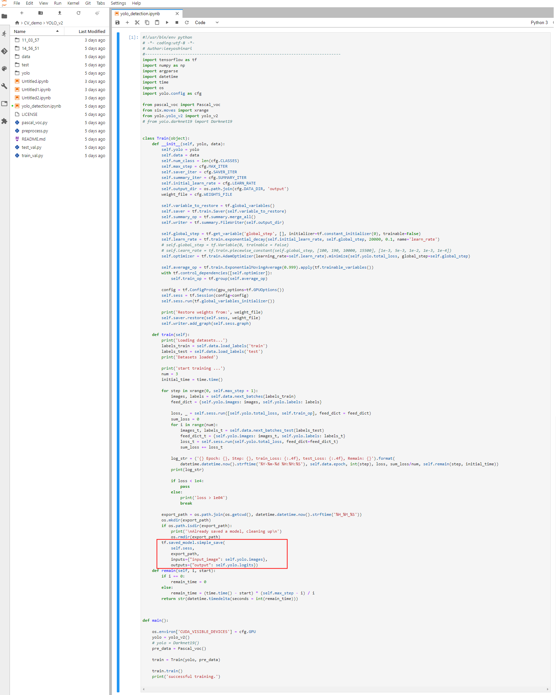

如何导出模型
准备好对应的主文件和及相关的文件
在平台文件系统中准备一个主文件yolo_detction.ipynb及下图所示的文件目录结构。
进入JupyterLab
参考数据源和数据集的使用新建一个Jupyter任务并启动，单击进入JupyterLab。
打开yolo_detction.ipynb文件
在JupyterLab页面左侧导航栏上找到yolo_detction.ipynb文件并双击。系统展示如下图所示页面。

注：
其中，红框的地方表示如何调用Saver。
运行yolo_detction.ipynb
单击JupyterLab页面上的运行小图标，系统在代码下方展示运行结果。
查看训练的模型文件
模型训练完成后，输出的结果展示在下图所示目录中。
如何将训练的模型发布成服务
用户可以在当前平台文件系统中新建一个文件夹（如model_vgg）。
将训练结果中的文件拷贝至model_vgg文件夹中，修改文件夹名为数字，拷贝后的目录结构如下图所示。
参考新建TensorFlow模型新增TensorFlow模型。
参考在TensorFlow模型中新增模型版本新增模型版本，新增模型版本时的模型路径选择model_vgg文件夹。
对模型进行发布、测试。